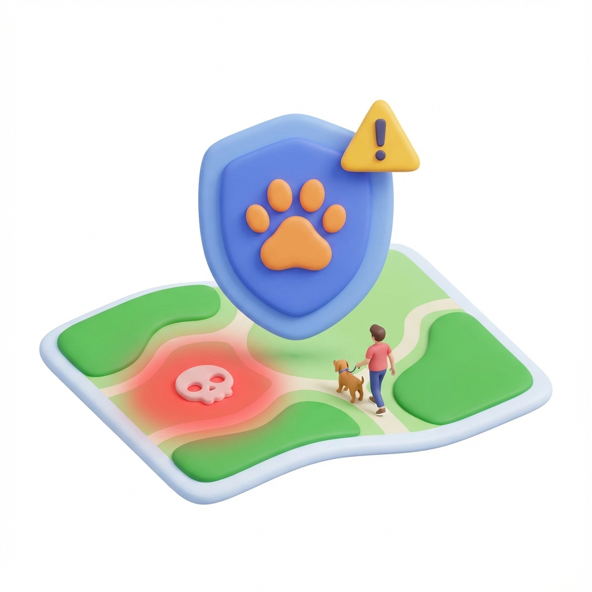

Proteggi il tuo amico a quattro zampe con il sistema di segnalazioni condivise della community.

Avvisa gli altri utenti di pericoli in zona: bocconi avvelenati, vetro a terra, aree cani non sicure.
Ricevi una notifica push se ti avvicini a una zona segnalata come pericolosa.
Se perdi il tuo cane, attiva l'allarme SOS. Tutti gli utenti nel raggio di km riceveranno foto e dettagli per aiutarti nelle ricerche.
Accesso rapido ai numeri di emergenza veterinaria e pronto soccorso animale h24.